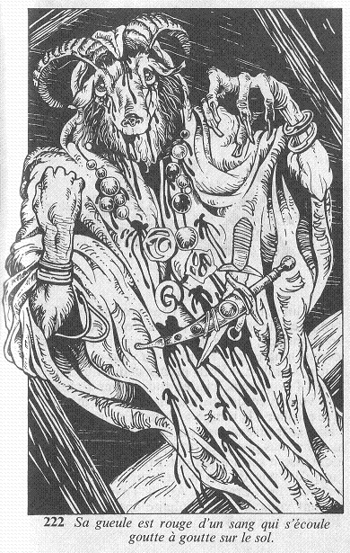

Vous saisissez la poignée que vous tournez lentement, et vous poussez la porte. La tempête qui fait rage, dehors, produit un vacarme infernal, mais vous franchissez cependant le pas de la porte... et vous vous arrêtez net, le souffle coupé et les yeux grands ouverts, glacé d'effroi. Devant vous se tient une silhouette encapuchonnée dont le visage n'a rien d'humain, car sa tête est celle d'un bouc ! Sa gueule est rouge d'un sang qui s'écoule goutte à goutte sur le sol, et ses yeux morts vous fixent de leur regard vide.

La vision est terrifiante, et vous ajoutez 3 points à votre total de PEUR. Si vous êtes toujours en vie, vous claquez la porte, et vous faites demi-tour en courant. Allez-vous vous précipiter vers une porte qui se trouve sur votre gauche , vers une porte située à votre droite , ou revenir sur vos pas dans le couloir ?